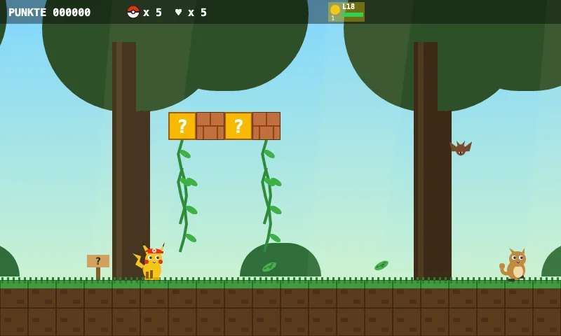
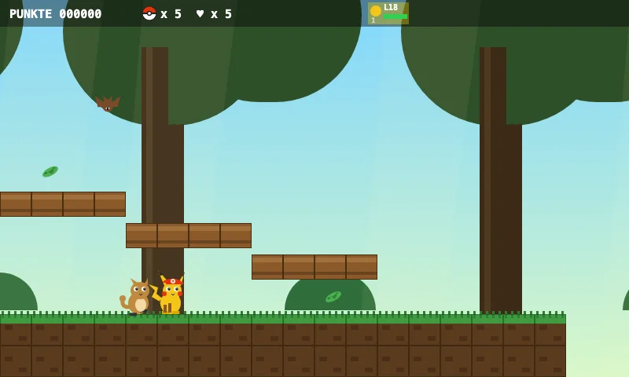
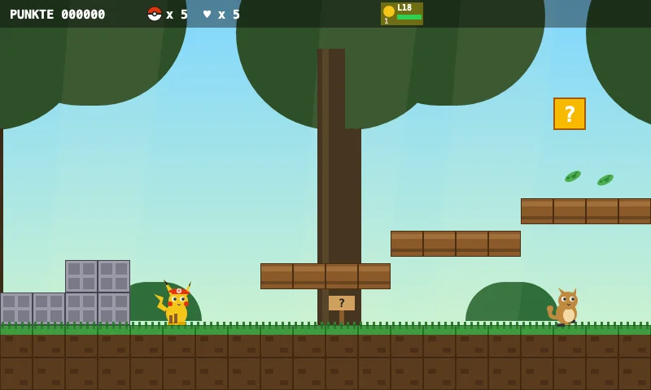
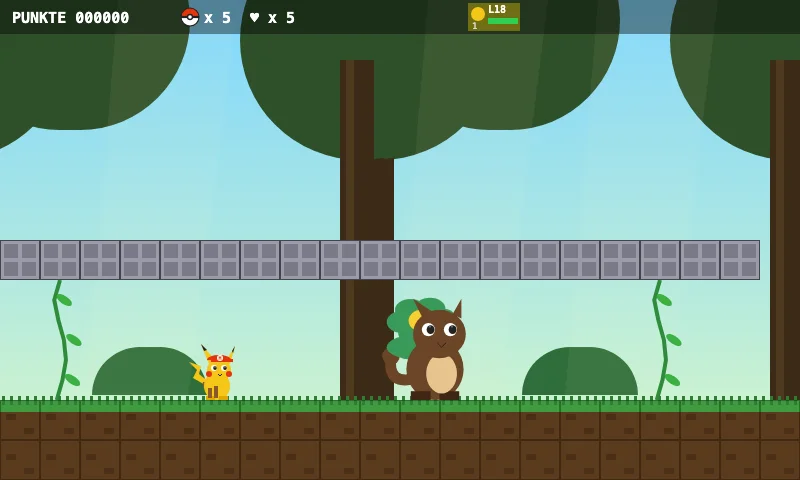
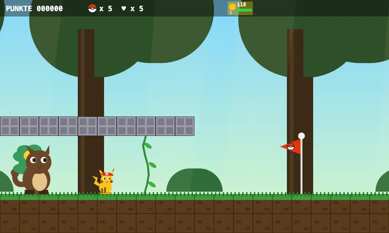

Approved level · 2-1
2-1 Monkey Jungle
The monkeys are having a banana party!
Ride the vine roller coaster.
Watch out for the spikes!
Vinekong is waiting in the palm house.
Five looks inside the level

The world
The monkeys are having a banana party!

Objective
Ride the vine roller coaster.

Special feature
The vine roller coaster! Hop along the wooden rails.

Boss
Vinekong, King of the Palms — Grab the heart first – then your team is ready!

The final stretch
Vinekong is waiting in the palm house.
Validated and completed by the game bot.